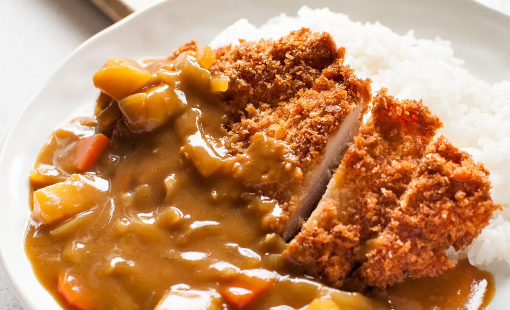

Japanese Katsu Curry

Methods
- Put oil into a pot and sauté onion pieces until the edges start browning
- Add potato and carrot pieces to the pot and stir.
- Add water and bring it to a boil. Remove scum as it rises.
- Add curry roux and cook.
- Cook chicken cutlets and slice them.
- Put cooked rice on one side of a serving plate, place cutlet pieces next to the rice.
- Pour curry on the side next to the cutlet away from the rice.
- Place a small amount of fukujinzuke on the plate.